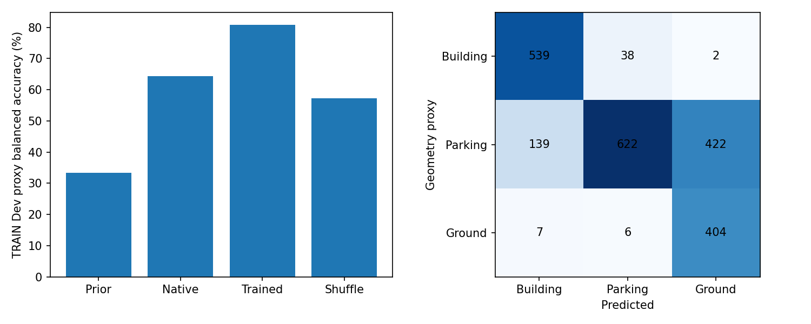
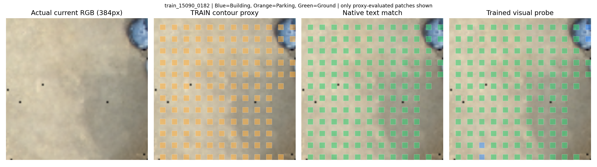
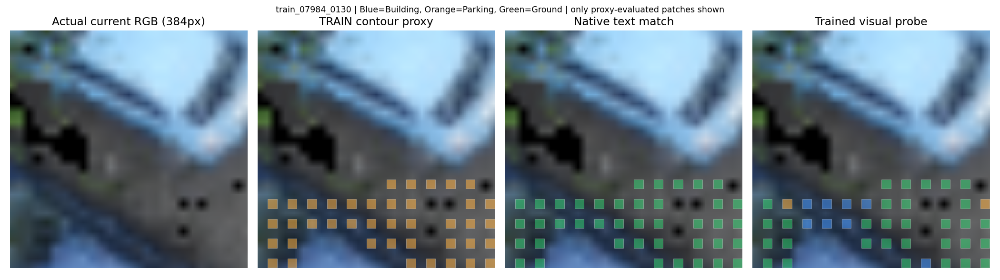
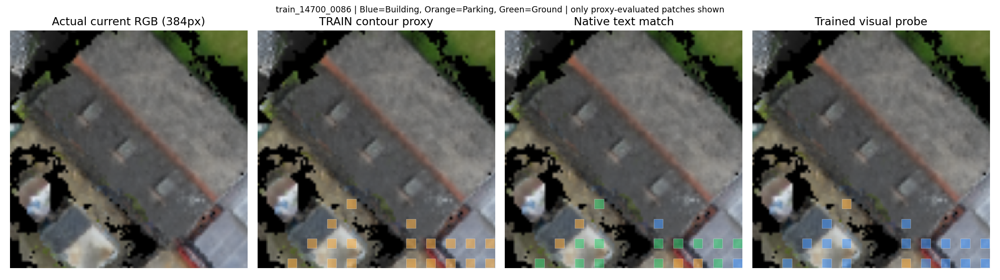
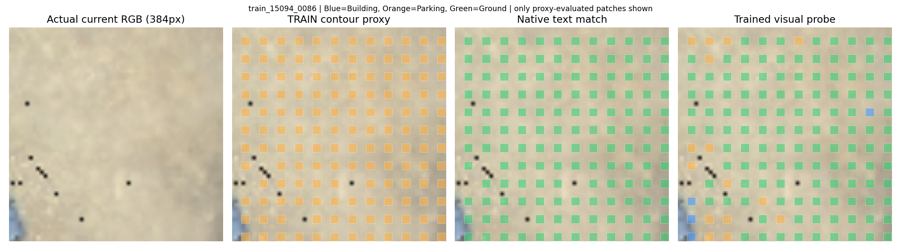
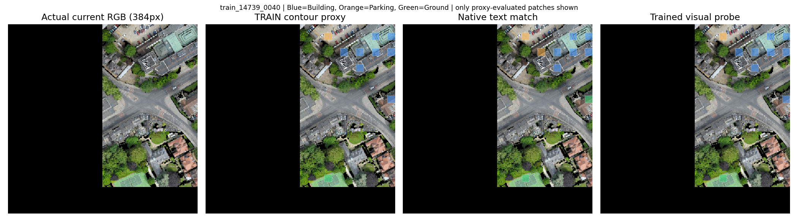
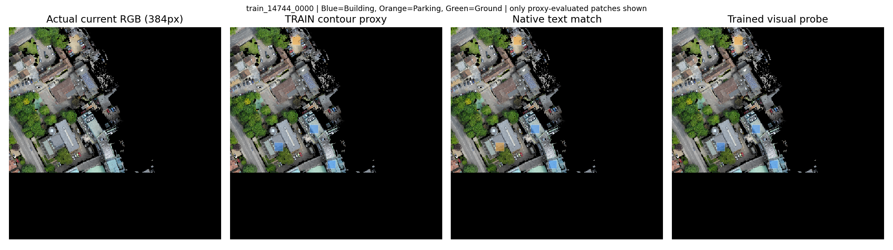

全部为TRAIN；Contour只是弱代理，非像素实例GT。本轮没有导航SR。
中文报告
this is a parking area. There are black and red cars in this area. this area is next to the black triangle and pyramid roofed buildings on the side of the hills road. This area has a black tree on the road side and 3 trees next to it.

A light blue car next to a dark blue car on the edge of the map off the fen Causeway in front of a brown building with a white roof with skylights on it

The small brown building in the large parking lot on Drosier Road that has a black car and red car parked on the side of it.

This is a tan parking lot behind some grey buildings on Hills Road. There are grey buildings the north, brown buildings to the south, and a large grey building with solar panels on its right.

Two story White House with a gray roof, that is next to the Regent Street Dental Surgery building off Regent Street near the edge of the map

Small building with a gray roof at the intersection of Regent Street and Gonville Place, it is located next to Regent Street Dental Surgery.
